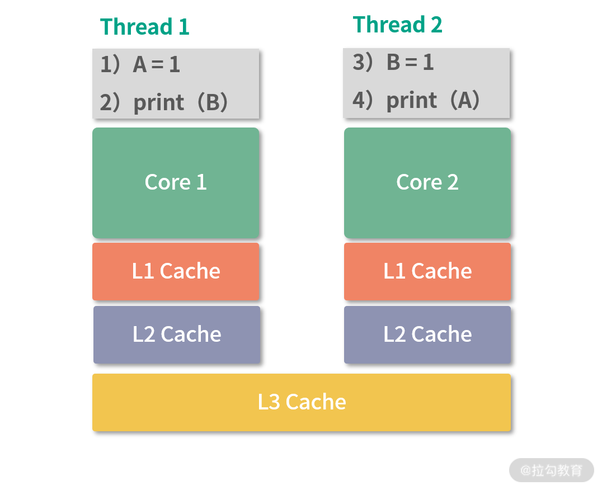

- 00 开篇词 为什么大厂面试必考操作系统？.md.html
- 00 课前必读 构建知识体系，可以这样做！.md.html
- 01 计算机是什么：“如何把程序写好”这个问题是可计算的吗？.md.html
- 02 程序的执行：相比 32 位，64 位的优势是什么？（上）.md.html
- 03 程序的执行：相比 32 位，64 位的优势是什么？（下）.md.html
- 04 构造复杂的程序：将一个递归函数转成非递归函数的通用方法.md.html
- 05 存储器分级：L1 Cache 比内存和 SSD 快多少倍？.md.html
- 05 (1) 加餐 练习题详解（一）.md.html
- 06 目录结构和文件管理指令：rm -rf 指令的作用是？.md.html
- 07 进程、重定向和管道指令：xargs 指令的作用是？.md.html
- 08 用户和权限管理指令： 请简述 Linux 权限划分的原则？.md.html
- 09 Linux 中的网络指令：如何查看一个域名有哪些 NS 记录？.md.html
- 10 软件的安装： 编译安装和包管理器安装有什么优势和劣势？.md.html
- 11 高级技巧之日志分析：利用 Linux 指令分析 Web 日志.md.html
- 12 高级技巧之集群部署：利用 Linux 指令同时在多台机器部署程序.md.html
- 12 (1)加餐 练习题详解（二）.md.html
- 13 操作系统内核：Linux 内核和 Windows 内核有什么区别？.md.html
- 14 用户态和内核态：用户态线程和内核态线程有什么区别？.md.html
- 15 中断和中断向量：Javajs 等语言为什么可以捕获到键盘输入？.md.html
- 16 WinMacUnixLinux 的区别和联系：为什么 Debian 漏洞排名第一还这么多人用？.md.html
- 16 (1)加餐 练习题详解（三）.md.html
- 17 进程和线程：进程的开销比线程大在了哪里？.md.html
- 18 锁、信号量和分布式锁：如何控制同一时间只有 2 个线程运行？.md.html
- 19 乐观锁、区块链：除了上锁还有哪些并发控制方法？.md.html
- 20 线程的调度：线程调度都有哪些方法？.md.html
- 21 哲学家就餐问题：什么情况下会触发饥饿和死锁？.md.html
- 22 进程间通信： 进程间通信都有哪些方法？.md.html
- 23 分析服务的特性：我的服务应该开多少个进程、多少个线程？.md.html
- 23 (1)加餐 练习题详解（四）.md.html
- 24 虚拟内存 ：一个程序最多能使用多少内存？.md.html
- 25 内存管理单元： 什么情况下使用大内存分页？.md.html
- 26 缓存置换算法： LRU 用什么数据结构实现更合理？.md.html
- 27 内存回收上篇：如何解决内存的循环引用问题？.md.html
- 28 内存回收下篇：三色标记-清除算法是怎么回事？.md.html
- 28 (1)加餐 练习题详解（五）.md.html
- 29 Linux 下的各个目录有什么作用？.md.html
- 30 文件系统的底层实现：FAT、NTFS 和 Ext3 有什么区别？.md.html
- 31 数据库文件系统实例：MySQL 中 B 树和 B+ 树有什么区别？.md.html
- 32 HDFS 介绍：分布式文件系统是怎么回事？.md.html
- 32 (1)加餐 练习题详解（六）.md.html
- 33 互联网协议群（TCPIP）：多路复用是怎么回事？.md.html
- 34 UDP 协议：UDP 和 TCP 相比快在哪里？.md.html
- 35 Linux 的 IO 模式：selectpollepoll 有什么区别？.md.html
- 36 公私钥体系和网络安全：什么是中间人攻击？.md.html
- 36 (1)加餐 练习题详解（七）.md.html
- 37 虚拟化技术介绍：VMware 和 Docker 的区别？.md.html
- 38 容器编排技术：如何利用 K8s 和 Docker Swarm 管理微服务？.md.html
- 39 Linux 架构优秀在哪里.md.html
- 40 商业操作系统：电商操作系统是不是一个噱头？.md.html
- 40 (1)加餐 练习题详解（八）.md.html
- 41 结束语 论程序员的发展——信仰、选择和博弈.md.html
- 捐赠
23 (1)加餐 练习题详解（四）
今天我会带你把《模块四：进程和多线程》中涉及的课后练习题，逐一讲解，并给出每个课时练习题的解题思路和答案。
练习题详解
17 | 进程和线程：进程的开销比线程大在了哪里？
【问题】考虑下面的程序：
fork()
fork()
fork()
print(“Hello World\n”)
请问这个程序执行后， 输出结果 Hello World 会被打印几次？
【解析】 这道题目考察大家对 fork 能力的理解。
fork 的含义是复制一份当前进程的全部状态。第 1 个 fork 执行 1 次产生 1 个额外的进程。 第 2 个 fork，执行 2 次，产生 2 个额外的进程。第 3 个 fork 执行 4 次，产生 4 个额外的进程。所以执行 print 的进程一共是 8 个。
18 | 锁、信号量和分布式锁：如何控制同一时间只有 2 个线程运行？
【问题】如果考虑到 CPU 缓存的存在，会对上面我们讨论的算法有什么影响？
【解析】 这是一道需要大家查一些资料的题目。这里涉及一个叫作内存一致性模型的概念。具体就是说，在同一时刻，多线程之间，对内存中某个地址的数据认知是否一致（简单理解，就是多个线程读取同一个内存地址能不能读到一致的值）。
对某个地址，和任意时刻，如果所有线程读取值，得到的结果都一样，是一种强一致性，我们称为线性一致性（Sequencial Consistency），含义就是所有线程对这个地址中数据的历史达成了一致，历史没有分差，有一条大家都能认可的主线，因此称为线性一致。 如果只有部分时刻所有线程的理解是一致的，那么称为弱一致性（Weak Consistency）。
那么为什么会有内存不一致问题呢? 这就是因为 CPU 缓存的存在。

如上图所示：假设一开始 A=0,B=0。两个不在同一个 CPU 核心执行的 Thread1、Thread2 分别执行上图中的简单程序。在 CPU 架构中，Thread1,Thread2 在不同核心，因此它们的 L1\L2 缓存不共用， L3 缓存共享。
在这种情况下，如果 Thread1 发生了写入 A=1，这个时候会按照 L1,L2,L3 的顺序写入缓存，最后写内存。而对于 Thread2 而言，在 Thread1 刚刚发生写入时，如果去读取 A 的值，就需要去内存中读，这个时候 A=1 可能还没有写入内存。但是对于线程 1 来说，它只要发生了写入 A=1，就可以从 L1 缓存中读取到这次写入。所以在线程 1 写入 A=1 的瞬间，线程 1 线程 2 无法对 A 的值达成一致，造成内存不一致。这个结果会导致 print 出来的 A 和 B 结果不确定，可能是 0 也可能是 1，取决于具体线程执行的时机。
考虑一个锁变量，和 cas 上锁操作，代码如下：
int lock = 0
void lock() {
while(!cas(&lock, 0, 1)){
// CPU降低功耗的指令
}
}
上述程序构成了一个简单的自旋锁（spin-lock）。如果考虑到内存一致性模型，线程 1 通过 cas 操作将 lock 从 0 置 1。这个操作会先发生在线程所在 CPU 的 L1 缓存中。cas 函数通过底层 CPU 指令保证了原子性，cas 执行完成之前，线程 2 的 cas 无法执行。当线程 1 开始临界区的时候，假设这个时候线程 2 开始执行，尝试获取锁。如果这个过程切换非常短暂，线程 2 可能会从内存中读取 lock 的值（而这个值可能还没有写入，还在 Thread 所在 CPU 的 L1、L2 中），线程 2 可能也会通过 cas 拿到锁。两个线程同时进入了临界区，造成竞争条件。
这个时候，就需要强制让线程 2的读取指令一定等到写入指令彻底完成之后再执行，避免使用 CPU 缓存。Java 提供了一个 volatile 关键字实现这个能力，只需要这样：
volatile int lock = 0;
就可以避免从读取不到对lock的写入问题。
19 | 乐观锁、区块链：除了上锁还有哪些并发控制方法？
【问题】举例各 2 个悲观锁和乐观锁的应用场景？
【解析】 乐观锁、悲观锁都能够实现避免竞争条件，实现数据的一致性。 比如减少库存的操作，无论是乐观锁、还是悲观锁都能保证最后库存算对（一致性）。 但是对于并发减库存的各方来说，体验是不一样的。悲观锁要求各方排队等待。 乐观锁，希望各方先各自进步。所以进步耗时较长，合并耗时较短的应用，比较适合乐观锁。 比如协同创作（写文章、视频编辑、写程序等），协同编辑（比如共同点餐、修改购物车、共同编辑商品、分布式配置管理等），非常适合乐观锁，因为这些操作需要较长的时间进步（比如写文章要思考、配置管理可能会连续修改多个配置）。乐观锁可以让多个协同方不急于合并自己的版本，可以先 focus 在进步上。
相反，悲观锁适用在进步耗时较短的场景，比如锁库存刚好是进步（一次库存计算）耗时少的场景。这种场景使用乐观锁，不但没有足够的收益，同时还会导致各个等待方（线程、客户端等）频繁读取库存——而且还会面临缓存一致性的问题（类比内存一致性问题）。这种进步耗时短，频繁同步的场景，可以考虑用悲观锁。类似的还有银行的交易，订单修改状态等。
再比如抢购逻辑，就不适合乐观锁。抢购逻辑使用乐观锁会导致大量线程频繁读取缓存确认版本（类似 cas 自旋锁），这种情况下，不如用队列（悲观锁实现）。
综上：有一个误区就是悲观锁对冲突持有悲观态度，所以性能低；乐观锁，对冲突持有乐观态度，鼓励线程进步，因此性能高。 这个不能一概而论，要看具体的场景。最后补充一下，悲观锁性能最高的一种实现就是阻塞队列，你可以参考 Java 的 7 种继承于 BlockingQueue 阻塞队列类型。
20 | 线程的调度：线程调度都有哪些方法？
【问题】用你最熟悉的语言模拟分级队列调度的模型？
【解析】 我用 Java 实现了一个简单的 yield 框架。 没有到协程的级别，但是也初具规模。考虑到协程实现需要更复杂一些，所以我用 PriorityQueue 来放高优任务；然后我用 LinkedList 来作为放普通任务的队列。Java 语言中的add和remove方法刚好构成了入队和出队操作。
private PriorityQueue<Task> urgents;
private ArrayList<LinkedList<Task>> multLevelQueues;
我实现了一个submit方法用于提交任务，代码如下：
var scheduler = new MultiLevelScheduler();
scheduler.submit((IYieldFunction yield) -> {
System.out.println("Urgent");
}, 10);
普通任务我的程序中默认是 3 级队列。提交的任务优先级小于 100 的会放入紧急队列。每个任务就是一个简单的函数。我构造了一个 next() 方法用于决定下一个执行的任务，代码如下：
private Task next(){
if(this.urgents.size() > 0) {
return this.urgents.remove();
} else {
for(int i = 0; i < this.level; i++) {
var queue = this.multLevelQueues.get(i);
if(queue.size() > 0) {
return queue.remove();
}
}
}
return null;
}
先判断高优队列，然后再逐级看普通队列。
执行的程序就是递归调用 runNext() 方法，代码如下：
private void runNext(){
var nextTask = this.next();
if(nextTask == null) {return;}
if(nextTask.isYield()) {
return;
}
nextTask.run(() -> {
// yiled 内容……省略
});
this.runNext();
}
上面程序中，如果当前任务在yield状态，那么终止当前程序。yield相当于函数调用，从yield函数调用中返回相当于继续执行。yield相当于任务主动让出执行时间。使用yield模式不需要线程切换，可以最大程度利用单核效率。
最后是yield的实现，nextTask.run 后面的匿名函数就是yield方法，它像一个调度程序一样，先简单保存当前的状态，然后将当前任务放到对应的位置（重新入队，或者移动到下一级队列）。如果当前任务是高优任务，yield程序会直接返回，因为高优任务没有必要yield，代码如下：
nextTask.run(() -> {
if(nextTask.level == -1) {
// high-priority forbid yield
return;
}
nextTask.setYield(true);
if(nextTask.level < this.level - 1) {
multLevelQueues.get(nextTask.level + 1).add(nextTask);
nextTask.setLevel(nextTask.level + 1);
} else {
multLevelQueues.get(nextTask.level).add(nextTask);
}
this.runNext();
});
下面是完成的程序，你可以在自己的 IDE 中尝试。
package test;
import java.util.ArrayList;
import java.util.LinkedList;
import java.util.PriorityQueue;
import java.util.concurrent.locks.LockSupport;
import java.util.function.Function;
public class MultiLevelScheduler {
/**
* High-priority
*/
private PriorityQueue<Task> urgents;
private ArrayList<LinkedList<Task>> multLevelQueues;
/**
* Levels of Scheduler
*/
private int level = 3;
public MultiLevelScheduler(){
this.init();
}
public MultiLevelScheduler(int level) {
this.level = level;
this.init();
}
private void init(){
urgents = new PriorityQueue<>();
multLevelQueues = new ArrayList<>();
for(int i = 0; i < this.level; i++) {
multLevelQueues.add(new LinkedList<Task>());
}
}
@FunctionalInterface
interface IYieldFunction {
void yield();
}
@FunctionalInterface
interface ITask{
void run(IYieldFunction yieldFunction);
}
class Task implements Comparable<Task>{
int level = -1;
ITask task;
int priority;
private boolean yield;
public Task(ITask task, int priority) {
this.task = task;
this.priority = priority;
}
@Override
public int compareTo(Task o) {
return this.priority - o.priority;
}
public int getLevel() {
return level;
}
public void setLevel(int level) {
this.level = level;
}
public void run(IYieldFunction f) {
this.task.run(f);
}
public void setYield(boolean yield) {
this.yield = yield;
}
public boolean isYield() {
return yield;
}
}
public void submit(ITask itask, int priority) {
var task = new Task(itask, priority);
if(priority >= 100) {
this.multLevelQueues.get(0).add(task);
task.setLevel(0);
} else {
this.urgents.add(task);
}
}
public void submit(ITask t) {
this.submit(t, 100);
}
private Task next(){
if(this.urgents.size() > 0) {
return this.urgents.remove();
} else {
for(int i = 0; i < this.level; i++) {
var queue = this.multLevelQueues.get(i);
if(queue.size() > 0) {
return queue.remove();
}
}
}
return null;
}
private void runNext(){
var nextTask = this.next();
if(nextTask == null) {return;}
if(nextTask.isYield()) {
return;
}
nextTask.run(() -> {
if(nextTask.level == -1) {
// high-priority forbid yield
return;
}
nextTask.setYield(true);
if(nextTask.level < this.level - 1) {
multLevelQueues.get(nextTask.level + 1).add(nextTask);
nextTask.setLevel(nextTask.level + 1);
} else {
multLevelQueues.get(nextTask.level).add(nextTask);
}
this.runNext();
});
this.runNext();
}
public void start() throws InterruptedException {
this.runNext();
}
public static void main(String[] argv) throws InterruptedException {
var scheduler = new MultiLevelScheduler();
scheduler.submit((IYieldFunction yield) -> {
System.out.println("Urgent");
}, 10);
scheduler.submit((IYieldFunction yield) -> {
System.out.println("Most Urgent");
}, 0);
scheduler.submit((IYieldFunction yield) -> {
System.out.println("A1");
yield.yield();
System.out.println("A2");
});
scheduler.submit((IYieldFunction yield) -> {
System.out.println("B");
});
scheduler.submit((IYieldFunction f) -> {
System.out.println("C");
});
scheduler.start();
}
}
最后是执行结果如下：
Most Urgent
Urgent
A1
B
C
A2
Process finished with exit code 0
我们看到结果中任务 1 发生了yield在打印 A2 之前交出了控制权导致任务 B,C 先被执行。如果你想在 yield 出上增加定时的功能，可以考虑 yield 发生后将任务移出队列，并在定时结束后重新插入回来。
21 | 哲学家就餐问题：什么情况下会触发饥饿和死锁？
【问题】如果哲学家就餐问题拿起叉子、放下叉子，只需要微小的时间，主要时间开销集中在 think 需要计算资源（CPU 资源）上，那么使用什么模型比较合适？
【解析】 哲学家就餐问题最多允许两组哲学家就餐，如果开销集中在计算上，那么只要同时有两组哲学家可以进入临界区即可。不考虑 I/O 成本，问题就很简化了，也失去了讨论的意义。比如简单要求哲学家们同时拿起左右手的叉子的做法就可以达到 2 组哲学家同时进餐。
22 | 进程间通信： 进程间通信都有哪些方法？
【问题】还有哪些我没有讲到的进程间通信方法？
【解析】 我看到有同学提到了 Android 系统的 OpenBinder 机制——允许不同进程的线程间调用（类似 RPC）。底层是 Linux 的文件系统和内核对 Binder 的驱动。
我还有没讲到的进程间的通信方法，比如说：
- 使用数据库
- 使用普通文件
- 还有一种是信号，一个进程可以通过操作系统提供的信号。举个例子，假如想给某个进程（pid=9999）发送一个 USR1 信号，那么可以用：
kill -s USR1 9999
进程 9999 可以通过写程序接收这个信号。 上述过程除了用kill指令外，还可以调用操作系统 API 完成。
23 | 分析服务的特性：我的服务应该开多少个进程、多少个线程？
【问题】如果磁盘坏了，通常会是怎样的情况？
【解析】 磁盘如果彻底坏了，服务器可能执行程序报错，无法写入，甚至死机。这些情况非常容易发现。而比较不容易观察的是坏道，坏道是磁盘上某个小区域数据无法读写了。有可能是硬损坏，就是物理损坏了，相当于永久损坏。也有可能是软损坏，比如数据写乱了。导致磁盘坏道的原因很多，比如电压不稳、灰尘、磁盘质量等问题。
磁盘损坏之前，往往还伴随性能整体的下降；坏道也会导致读写错误。所以在出现问题前，通常是可以在监控系统中观察到服务器性能指标变化的。比如 CPU 使用量上升，I/O Wait 增多，相同并发量下响应速度变慢等。
如果在工作中你怀疑磁盘坏了，可以用下面这个命令检查坏道：
sudo badblocks -v /dev/sda5
我的机器上是 /dev/sda5，你可以用df命令查看自己的文件系统。
总结
这个模块我们完整的学习了进程和多线程，讨论了多线程中最底层，最重要的若干问题，比如原子操作、锁、调度等。如果你还想深入学习，可以在课下去学习这几块知识。
- 一个是同步队列，这是实战中非常重要的一类并发数据结构，能够帮助你解决生产者消费者问题。
- 另一个是无锁设计，目的是提高程序的并发能力，尽可能地让更多的线程获得进步。
- 最后一块就是分布式领域，当你熟悉了操作系统知识后，分布式领域的知识能够给到你更多的场景和启发。
好的，进程和多线程部分就告一段落。接下来，我们将开始内存管理相关知识，请和我一起来学习“模块五：内存管理”吧。
© 2019 - 2023 Liangliang Lee. Powered by gin and hexo-theme-book.